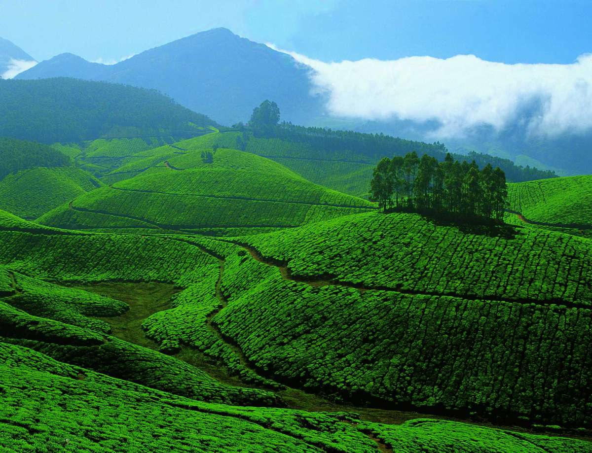
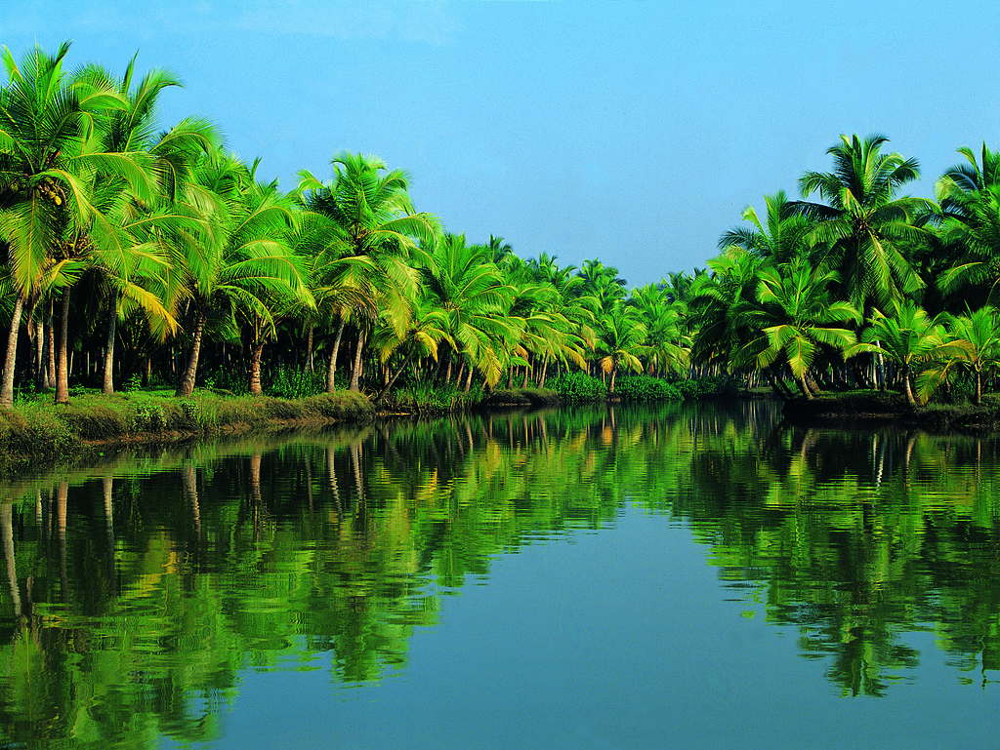

-

The journey of a thousand miles begins with a single step....
Pleasure is life....
-

Enjoy trips
Only one life ..Enjoy your life
Travel Travel Travel Travel Travel Travel Travel Travel Traavel Travel Travel Travel Traavel Travel Travel Trvel Tar